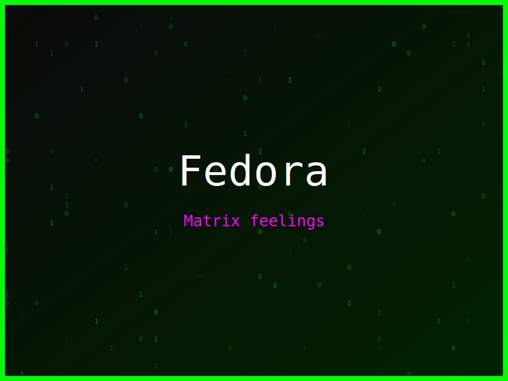

<section class="post-content">


    <div class="details-container">
        
        
        <ul class="details-list">
            <li><strong>Autor:</strong> piolinux</li>
            <li><strong>Descrição:</strong> Arte digital Fedora com a estética de matrix e um foco na liberdade do Linux.</li>
            <li><strong>Distro:</strong> Fedora</li>
            <li><strong>Frases:</strong> Ctrl+C Ctrl+V, Matrix feelings, Linux é liberdade</li>
            <li><strong>Tags:</strong> matrix, colorido</li>
        </ul>
        <a href="../galeria.html">Voltar para a galeria</a> ||
        <a href="../wallpaper41.svg" download="wallpaper-fedora-liberdade-da-matrix.svg">Baixar Wallpaper</a>
    </div>


</section>
